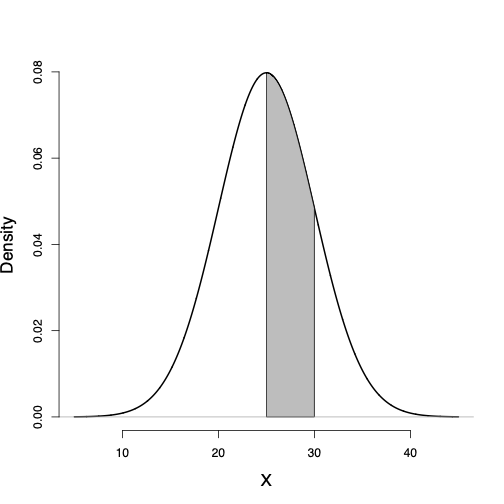
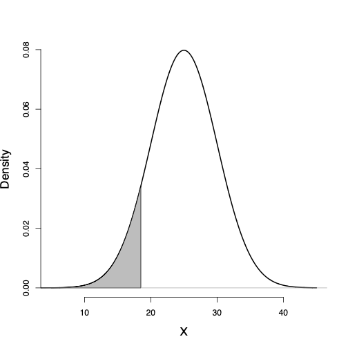
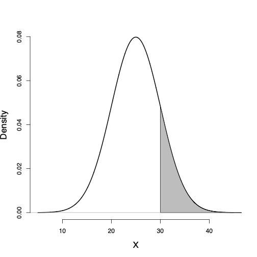
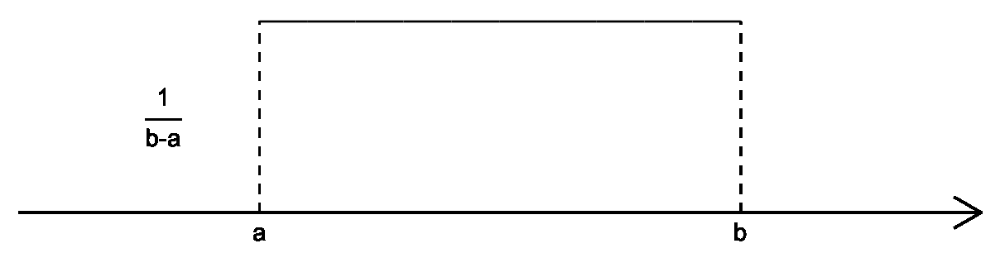
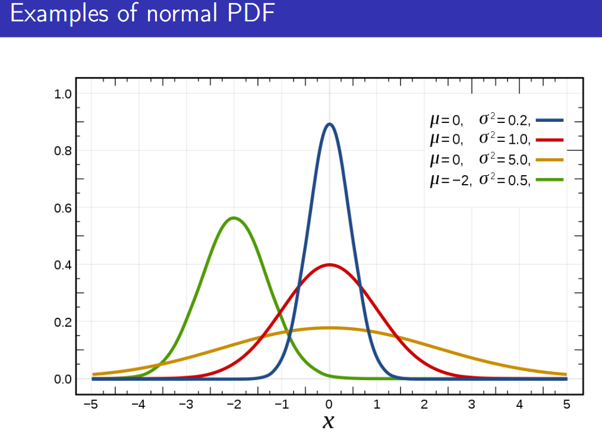
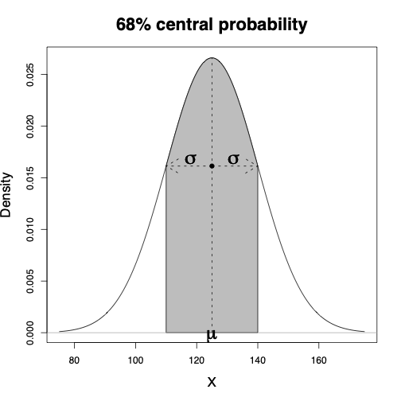
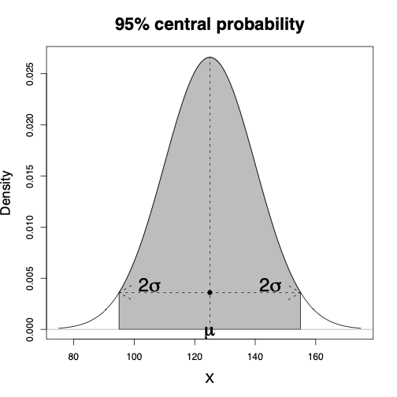
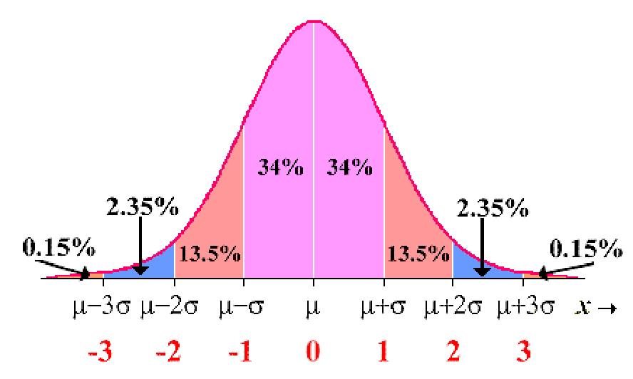
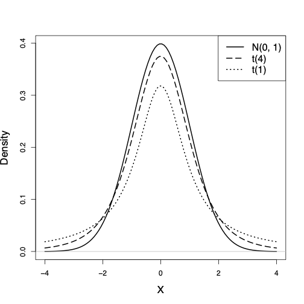

Code
flowchart TD
A(Experiment)
B(Sample Space)
C(Events)
D(Random Variables)
A --> B
B --> C
B --> D

Introduction to Probability
Zhaoxia Yu
We have used plots and summary statistics to learn about the distribution of different variables in the observed data and to investigate their relationships.
We now want to generalize our findings to the entire population of interest.
However, we almost always remain uncertain about the true distributions and relationships in the population.
Therefore, when we generalize our findings from a sample to the whole population, we should explicitly specify the extent of our uncertainty.
We use probability to measure or quantify uncertainty.
Experiment: any process that produces one outcome from a set of possible outcomes.
Before performing the experiment, we know the possible outcomes but do not know which one will occur.
roll a die.
flip a coin 10 times.
measure the resting heart rate of a randomly selected participant.
randomly select a patient and record their blood type.
Sample space: the set of all possible outcomes of an experiment. Denoted by the symbol \(\mathcal S\). Examples:
For rolling a die, the sample space is \(\mathcal S = \{1, 2, 3, 4, 5, 6\}\).
For flipping a coin 10 times, the sample space is
\[\begin{aligned} \mathcal S = \{& HHHHHHHHHH,\; HHHHHHHHHT,\; \ldots,\\ & TTTTTTTTTH,\; TTTTTTTTTT \}. \end{aligned}\]For measuring the resting heart rate of a randomly selected participant, the sample space is \(\mathcal S = \{0, 1, 2, \ldots\}\) (assuming heart rate is measured in beats per minute).
For randomly selecting a patient and recording their blood type, the sample space is \(\mathcal S = \{A, B, AB, O\}\).
An experiment is the process we perform.
Once the experiment is specified, the sample space is determined. It contains all possible outcomes of the experiment.
From the sample space, we can define different events and random variables depending on the question we want to answer.
An event is a subset of the sample space.
An event occurs if the observed outcome belongs to that subset.
Experiment: - Roll a fair die.
Sample space: \(\mathcal S=\{1,2,3,4,5,6\}\)
Events:
\(A=\{2,4,6\}\): roll an even number
\(B=\{5,6\}\): roll a number greater than 4
\(C=\{1\}\): roll a 1
Every sample space contains two special events.
Impossible event: \(\emptyset\) Contains no outcomes.
Certain event: \(\mathcal S\)
Contains every possible outcome.
For \(\mathcal S=\{1,2,3,4,5,6\}\),
“Roll a 7” =\(\emptyset\).
“Roll a number between 1 and 6” = \(\mathcal S\).
Suppose
\(A=\{2,4,6\},\qquad B=\{4,5,6\}.\)
Then
Union: \(A\cup B=\{2,4,5,6\}\)
Intersection: \(A\cap B=\{4,6\}\)
Complement: \(A^c=\{1,3,5\}\)
Suppose
\[A=\{2,4,6\},\qquad B=\{4,6\},\qquad C=\{1,3,5\}.\]
\(B\subset A\)
\(A\cap C=\emptyset\)
\(A\) and \(C\) are disjoint (mutually exclusive)
\(A\cup C=\mathcal S\)
\(C=A^c\)
A probability function assigns a number to each event.
The probability of an event measures how likely the event is to occur.
We write the probability of an event \(A\) as
\[ P(A). \]
Suppose a fair six-sided die is rolled once.
Sample space:
\[ \mathcal S=\{1,2,3,4,5,6\}. \]
Since the die is fair, each outcome is equally likely.
\[ P(\{1\})=P(\{2\})=\cdots=P(\{6\})=\frac16. \]
Each outcome has probability \(\frac16\).
Let
\[ A=\{2,4,6\}, \]
the event that the die shows an even number.
Since \(A=\{2\}\cup\{4\}\cup\{6\},\)
\[ P(A) = P(\{2\})+P(\{4\})+P(\{6\}) = \frac36 = \frac12. \]
The probability of an event is the sum of the probabilities of its outcomes.
A probability function satisfies three basic properties.
Nonnegative \(P(A)\ge0.\)
Certain event \(P(\mathcal S)=1.\)
Additivity. If \(A\) and \(B\) are disjoint,
\[ P(A\cup B)=P(A)+P(B). \]
When all outcomes are equally likely,
\[ P(A) = \frac{\text{number of outcomes in }A} {\text{number of outcomes in }\mathcal S}. \]
For a fair die,
\[ P(\{2,4,6\})=\frac36=\frac12. \]
This shortcut applies only when all outcomes are equally likely.
The joint probability of \(A\) and \(B\) is
\[ P(A\cap B), \]
the probability that both events occur.
Suppose a fair die is rolled once. Let
\(A=\{2,4,6\}\), the event that the outcome is even, and
\(B=\{4,5,6\}\), the event that the outcome is greater than 3.
Since \[ A\cap B=\{4,6\}, \]
\[ P(A\cap B)=\frac26=\frac13. \]
The probability of a single event is called its marginal probability.
\(P(A)\) is the marginal probability of \(A\).
\(P(B)\) is the marginal probability of \(B\).
\(P(A\cap B)\) is the joint probability of \(A\) and \(B\).
Marginal probabilities describe one event at a time, while a joint probability describes two events occurring together.
Suppose we know that event \(B\) has occurred. What is the probability that event \(A\) also occurs? This is called the conditional probability of \(A\) given \(B\), denoted by
\[ P(A\mid B). \]
Definition: If \(P(B)>0\), the conditional probability of \(A\) given \(B\) is
\[ P(A\mid B)=\frac{P(A\cap B)}{P(B)}. \]
Consider rolling a fair die once. Let \[ A=A=\{2,4,6\}, B=\{4,5,6\}\]
By the definition of \(P(A\mid B)\), we have \[P(A\mid B) = \frac{P(A\cap B)}{P(B)} = \frac{2/6}{3/6} = \frac23. \]
Conditional probability updates probabilities using additional information.
Two events are independent if knowing one event occurs does not change the probability of the other.
Equivalently,
\[ P(A\mid B)=P(A). \]
or
\[ P(A\cap B)=P(A)P(B). \]
In our example,
\[ P(A)=\frac12, \quad P(A\mid B)=\frac23. \]
Since
\[ P(A\mid B)\ne P(A), \]
the events \(A\) and \(B\) are dependent.
Let \(A=\{1,3,5\}, \quad B=\{1,2,3,4\}\)
Then, \[P(A)=\frac36=\frac12, P(B)=\frac46=\frac23, P(A\cap B)=\frac26=\frac13.\]
Since \[P(A\cap B) = P(A)P(B) = \frac12\times\frac23 = \frac13,\]
the events are independent.
| Disjoint | Independent |
|---|---|
| Cannot occur together | Can occur together |
| \[A\cap B=\emptyset\] | \[P(A\cap B)=P(A)P(B)\] |
| Knowing one occurs tells you the other cannot occur | Knowing one occurs does not change the probability of the other |
Let \(A=\{2,4,6\}, \quad B=\{1,3,5\}.\)
\(A\) and \(B\) are disjoint because \(A\cap B=\emptyset.\)
They are not independent because
\[ P(A\mid B)=0\ne\frac12=P(A). \]
Key Idea:
Disjoint events are mutually exclusive.
Independent events do not influence each other.
Suppose we randomly select one person from a population.
For this person, we observe
Experiment
Randomly select one person and determine the person’s blood type and Rh factor.
Sample Space
\[ \mathcal S= \{ \text{A+},\text{A−}, \text{B+},\text{B−}, \text{AB+},\text{AB−}, \text{O+},\text{O−} \}. \]
The sample space contains eight possible outcomes.
Examples of events include
\(A=\{\text{A+},\text{A−}\}\)
The person has blood type A.
\(B=\{\text{A+},\text{B+},\text{AB+},\text{O+}\}\)
The person is Rh positive.
\(C=\{\text{O+},\text{O−}\}\)
The person has blood type O.
Each event is a subset of the sample space.
Using the previous events,
Union: \(A\cup C\)
The person has blood type A or O.
Intersection: \(A\cap B\)
The person has blood type A and is Rh positive.
Complement: \(B^c\)
The person is Rh negative.
Examples:
\(A\cap C=\emptyset\)
A person cannot have both blood type A and blood type O.
Therefore, \(A\) and \(C\) are disjoint.
\(A\subset A\cup C\)
\(A\cup A^c=\mathcal S\)
These relationships hold for any events.
Suppose the blood type distribution in a population is
| Blood Type | Probability |
|---|---|
| A | 0.42 |
| B | 0.10 |
| AB | 0.04 |
| O | 0.44 |
This is marginal dsitribution of blood type.
Recall
\(A\): person has blood type A
\(C\): person has blood type O
Then
\(P(A)=0.42\)
\(P(C)=0.44\)
Since \(A\) and \(C\) are disjoint,
\[ P(A\cup C) = P(A)+P(C) = 0.42+0.44 = 0.86. \]
Suppose we also know he Rh factor distribution is
\[P(\text{Rh+})=0.85,\qquad P(\text{Rh−})=0.15.\]
The ABO and Rh blood group systems are determined by different genes and are generally considered independent.
Therefore, the probability of having a particular ABO blood type does not depend on Rh status.
Since ABO blood type and Rh factor are independent,
\[ P(\text{A and Rh+}) = P(\text{A})P(\text{Rh+}) = 0.42\times0.85 = 0.357. \]
The probability that a randomly selected person has blood type A and is Rh positive is 0.357.
Using conditional probability,
\[ P(\text{A}\mid\text{Rh+}) = \frac{P(\text{A and Rh+})} {P(\text{Rh+})} = \frac{0.357}{0.85} = 0.42. \]
Knowing that a person is Rh positive does not change the probability that the person has blood type A.
Experiment: flip a fair coin 10 times.
Question: What can we say about the outcomes?
Each outcome is a sequence of 10 heads (H) and tails (T).
Examples:
HHHTHTTTHH
HTHHHTTTHT
TTTTTHHHHH
There are \(2^{10}=1024\) possible sequences. Since the coin is fair and the flips are independent,
\[ P(\text{each sequence})=\frac1{2^{10}}=\frac1{1024}. \]
An event is a subset of the sample space.
Examples of events:
\(A\): Exactly 4 heads
\(B\): At least 8 heads
\(C\): The first flip is a head
Each event contains many possible sequences.
Question: How many sequences belong to event \(A\)?
The sample space contains \(1024\) possible outcomes.
However, in many applications we do not care about the exact sequence. Instead, we ask questions like
How many heads were observed?
Was the first flip a head?
Were there at least 8 heads?
These questions summarize the outcome rather than describing the entire sequence.
A random variable assigns a numerical value to each outcome in the sample space.
Define \(X=\text{number of heads in 10 flips}.\)
Examples
| Outcome | \(X\) |
|---|---|
| HHHHHHHHHH | 10 |
| HHHTHTTTHH | 6 |
| TTTTTTTTTT | 0 |
| HTHTHTHTHT | 5 |
Instead of studying \(1024\) possible sequences, we study only \(11\) possible values of \(X.\)
where \(X\in\{0,1,2,\ldots,10\}.\)
Random variables simplify probability problems.
Now our goal is to find
\[ P(X=x), \]
for each possible value \(x=0,1,\ldots,10.\)
For example,
\[ P(X=4) \]
is the probability of observing exactly four heads.
To compute \(P(X=4),\) count the number of sequences with exactly four heads.
There are \(\binom{10}{4}=210\) such sequences. Therefore,
\[ P(X=4) = \frac{\binom{10}{4}}{2^{10}} = \frac{210}{1024} \approx0.205. \]
Similarly,
\[ P(X=3) = \frac{\binom{10}{3}}{2^{10}}, \]
and
\[ P(X=7) = \frac{\binom{10}{7}}{2^{10}}. \]
Notice the pattern.
For any
\[ x=0,1,\ldots,10, \]
\[ P(X=x) = \frac{\binom{10}{x}}{2^{10}}. \]
More generally, if the probability of heads is \(p,\) then
\[ P(X=x) = \binom{10}{x} p^x (1-p)^{10-x}. \]
A random variable follows a Binomial distribution if
Notation:
\[ X\sim\text{Binomial}(n,p). \]
Its probability mass function is
\[ P(X=x) = \binom{n}{x} p^x (1-p)^{n-x}, \]
for \(x=0,1,\ldots,n.\)
For the coin-flipping experiment,
Number of trials: \(n=10\)
Success: Head
Probability of success: \(p=\frac12\)
Therefore,
\[ X\sim\text{Binomial}\left(10,\frac12\right). \]
The Binomial distribution describes the number of successes in \(n\) independent trials.
When $n=14, for example,
Each experiment has only two possible outcomes:
A Bernoulli random variable records the outcome of a single trial.
Define
\[ X= \begin{cases} 1, & \text{if success},\\ 0, & \text{if failure.} \end{cases} \]
Denote \(p=P(X=1)\), then
\[ P(X=0)=1-p. \]
We write
\[ X\sim\text{Bernoulli}(p). \]
The probability mass function (pmf) is
\[ P(X=x) = p^x(1-p)^{1-x}, \qquad x=0,1. \]
Equivalently,
| \(x\) | Probability |
|---|---|
| 0 | \(1-p\) |
| 1 | \(p\) |
Randomly select one person.
Define
\[ X= \begin{cases} 1, & \text{if the person has blood type O},\\ 0, & \text{otherwise.} \end{cases} \]
Then
\[ X\sim\text{Bernoulli}(p), \]
where
\[ p=P(\text{blood type O}). \]
The value of \(p\) depends on the population being studied.
Experiment: The process we perform.
Sample Space (\(\mathcal{S}\)): All possible outcomes of the experiment.
Events: Subsets of the sample space.
Random Variables: Numerical functions defined on the sample space.
For a continuous random variable, between any two possible values, there are infinitely many other possible values.
The probability distribution of a random variable provides the required information to find the probability of its possible values.
The probability distributions discussed here are characterized by one or more parameters.
The parameters of probability distributions we assume for random variables are usually unknown.
For discrete random variables, the probability distribution is fully defined by its probability mass function (pmf).
This is a function that specifies the probability of each possible value within the range of random variable.
For the genotype example, the pmf of the random variable \(X\) is
\[P(X=x) = \left\{ \begin{array}{l@{\quad}l} 0.49 & \mbox{for } x=0, \\ 0.42 & \mbox{for } x=1, \\ 0.09 & \mbox{for } x=2. \end{array} \right.\]
One of the most straightforward, yet useful distributions, is the one that assigns the same probability, regardless of the value.
For that reason, it is called uniform probability distribution.
A discrete uniform distribution can be written as follow
\[P(X=x) = \left\{ \begin{array}{l@{\quad}l} \frac{1}{k} & x=1,...,k \\ 0 & \mbox{otherwise} \\ \end{array} \right.\]
For discrete random variables, the pmf provides the probability of each possible value.
For continuous random variables, the number of possible values is uncountable, and the probability of any specific value is zero.
For these variables, we are usually interested in the probability that the value of the random variable is within a specific interval from \(x_{1}\) to \(x_{2}\); we show this probability as \(P(x_{1} < X \le x_{2})\).
The total area under the probability density curve is 1.
The curve (and its corresponding function) gives the probability of the random variable falling within an interval.
This probability is equal to the area under the probability density curve over the interval.



The probability of any interval from \(x_{1}\) to \(x_{2}\), where \(x_{1} < x_{2}\), can be obtained using the corresponding lower tail probabilities for these two points as follows: \[\begin{equation*} P(x_1 < X \le x_2) = P(X \le x_2) - P(X \le x_1). \end{equation*}\]
For example, the probability of a BMI between 25 and 30 is \[\begin{equation*} P(25 < X \le 30) = P(X \le 30) - P(X \le 25). \end{equation*}\]
We previously saw discrete uniform distribution; we now discuss its continuous version.
Let \(a\) and \(b\) be two real numbers, so that \(a<b\). The following the pdf of a continuous uniform distribution:
\[f(x) = \left\{ \begin{array}{l@{\quad}l} \frac{1}{b-a} & a<x<b \\ 0 & \mbox{otherwise} \\ \end{array} \right.\]

Suppose \(X\sim\text{Uniform}(0,0.5).\)
Then
\[ f(x)= \begin{cases} 2, & 0<x<0.5,\\ 0, & \text{otherwise}. \end{cases} \]
Notice that \(f(0.25)=2.\) So \(f(0.25)\) cannot be the probability that \(X=0.25\).
In fact, \(P(X=0.25)=0.\)
A PDF gives the density of probability, not the probability itself.
For \(X\sim\text{Uniform}(0,0.5),\)
the probability of an interval is the area under the PDF.
For example,
\[ P(0.10<X<0.30) = 2\times(0.30-0.10) = 0.40. \]
Key idea:
Consider the probability distribution function and its corresponding probability density curve we assumed for BMI in the above example.
This distribution is known as normal distribution, which is one of the most widely used distributions for continuous random variables.
Random variables with this distribution (or very close to it) occur often in nature.
\[N(\mu, \sigma^2)\]

The 68–95–99.7% rule for normal distributions specifies that
68% of values fall within 1 standard deviation of the mean
95% of values fall within 2 standard deviations of the mean
99.7% of values fall within 3 standard deviations of the mean



Another continuous probability distribution that is used very often in statistics is the Student’s \(t\)-distribution or simply the \(t\)-distribution.

The ABO blood type is determined by a person’s genotype.
Each person inherits one allele from the mother, and one allele from the father.
There are three possible alleles: A, B, and O.
The six possible genotypes are
| Genotype | Blood Type |
|---|---|
| AA | A |
| AO | A |
| BB | B |
| BO | B |
| AB | AB |
| OO | O |
Observation: Blood type A can arise from two different genotypes (AA or AO).
Suppose the genotype distribution is
| Genotype | Probability |
|---|---|
| AA | 0.12 |
| AO | 0.30 |
| BB | 0.03 |
| BO | 0.07 |
| AB | 0.04 |
| OO | 0.44 |
The genotype distribution gives the blood type distribution
| Blood Type | Probability |
|---|---|
| A | 0.42 |
| B | 0.10 |
| AB | 0.04 |
| O | 0.44 |
because
\(P(\text{A})=P(\text{AA})+P(\text{AO})=0.42\)
\(P(\text{B})=P(\text{BB})+P(\text{BO})=0.10\)
Suppose a randomly selected person has blood type A.
What is the probability that the genotype is AO?
Using conditional probability,
\[ P(\text{AO}\mid\text{A}) = \frac{P(\text{AO})}{P(\text{A})} = \frac{0.30}{0.42} = 0.714. \]
Similarly,
\[ P(\text{AA}\mid\text{A}) = \frac{0.12}{0.42} = 0.286. \]
Suppose two people both have blood type A.
Although they have the same blood type,
their children may inherit different blood types.
Genotype contains more information than blood type.
This case study illustrates several important ideas.
An experiment defines a sample space.
Events are subsets of the sample space.
Probabilities quantify uncertainty.
Conditional probability incorporates additional information.
Sometimes what we observe (blood type) does not uniquely determine the underlying state (genotype).
This is a common theme in data science and biomedical research.